Gallery
58 worked examples. Every figure was rendered by ggplot3 when this site was built, and the code under each one is exactly what produced it.
Essentials
The everyday layers. Each takes the same aesthetics you would expect, and several can be stacked in one plot - layers draw in the order they are added.
Scatter plot
The default view of a relationship between two continuous variables.
Aesthetics: x, y, color, size, alpha
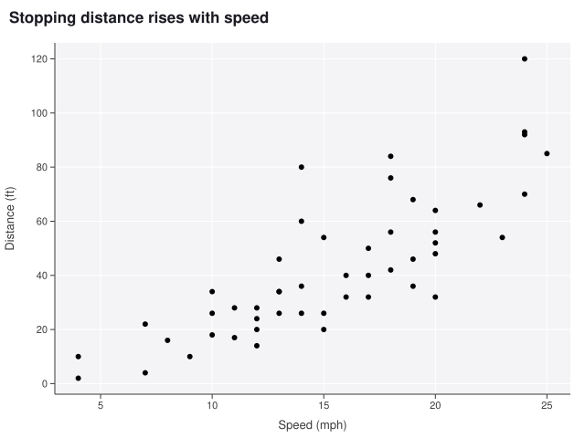
ggplot3(cars, aes(speed, dist)) + geom_point() + labs(title = "Stopping distance rises with speed",
x = "Speed (mph)", y = "Distance (ft)")Jittered points
Points nudged by a reproducible random offset so overlapping observations stay countable; pair with a boxplot or violin.
Aesthetics: x, y, color
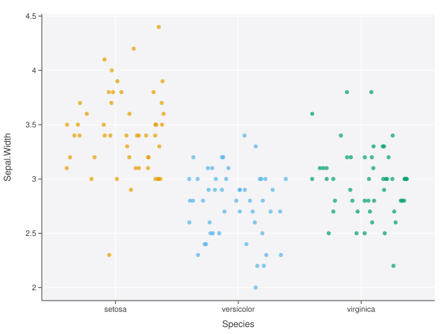
ggplot3(iris, aes(Species, Sepal.Width, color = Species)) + geom_jitter(alpha = 0.7) +
theme(legend_position = "none")Trend line with confidence band
A loess or linear fit with a confidence ribbon; use method = "lm" for a straight line.
Aesthetics: x, y, color
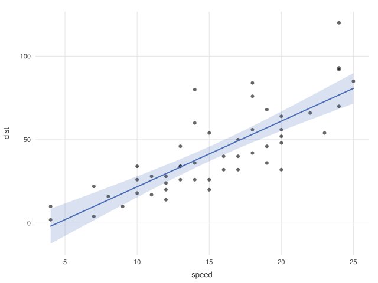
ggplot3(cars, aes(speed, dist)) + geom_point(alpha = 0.6) + geom_smooth(method = "lm") +
theme_minimal()Line chart
One polyline per group, ordered by x - the standard time-series view.
Aesthetics: x, y, color, group, linewidth, dash
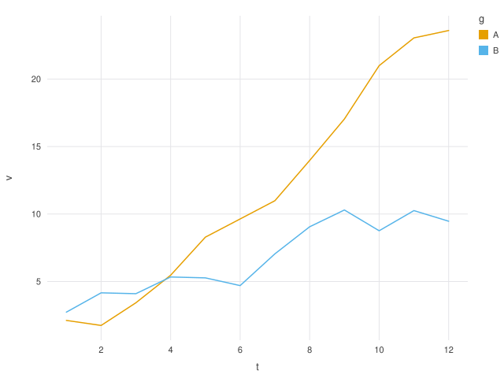
ggplot3(data.frame(t = rep(1:12, 2), v = c(cumsum(rnorm(12, 2)),
cumsum(rnorm(12, 1))), g = rep(c("A", "B"), each = 12)), aes(t,
v, color = g)) + geom_line() + theme_minimal()Step chart
Holds each value until the next observation - right for quantities that change discretely, like a policy rate.
Aesthetics: x, y, color, group
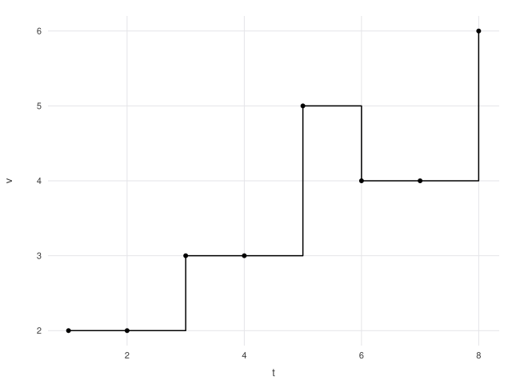
ggplot3(data.frame(t = 1:8, v = c(2, 2, 3, 3, 5, 4, 4, 6)), aes(t,
v)) + geom_step() + geom_point() + theme_minimal()Area chart
A line closed to a zero baseline; reads as magnitude over time rather than rate of change.
Aesthetics: x, y, color, group, alpha
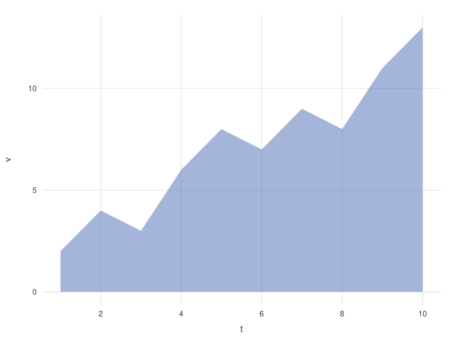
ggplot3(data.frame(t = 1:10, v = c(2, 4, 3, 6, 8, 7, 9, 8, 11,
13)), aes(t, v)) + geom_area(alpha = 0.5) + theme_minimal()Ribbon
A band between two series - forecast intervals, min/max envelopes, uncertainty around a fit.
Aesthetics: x, ymin, ymax, color, alpha
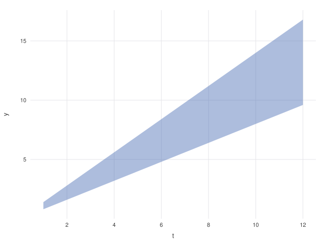
ggplot3(data.frame(t = 1:12, lo = (1:12) * 0.8, hi = (1:12) * 1.4),
aes(t, ymin = lo, ymax = hi)) + geom_ribbon(alpha = 0.45) +
theme_minimal()Segments
Straight lines between explicit endpoints; the building block for arrows, connectors, and slope charts.
Aesthetics: x, y, xend, yend, color
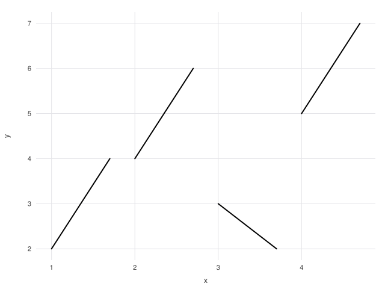
ggplot3(data.frame(x = 1:4, y = c(2, 4, 3, 5), xe = 1:4 + 0.7,
ye = c(4, 6, 2, 7)), aes(x, y, xend = xe, yend = ye)) + geom_segment(linewidth = 2) +
theme_minimal()Reference lines
geom_hline() and geom_vline() span the panel and ignore the plot's aes(), so they never disturb the data mapping.
Aesthetics: (literal intercepts)
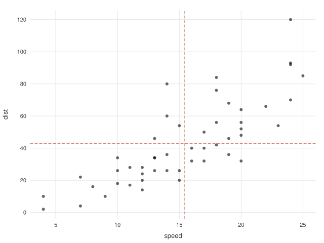
ggplot3(cars, aes(speed, dist)) + geom_point(alpha = 0.6) + geom_hline(mean(cars$dist),
dash = "5,4", color = "#C1462F") + geom_vline(mean(cars$speed),
dash = "5,4", color = "#C1462F") + theme_minimal()Text labels
Draws the label column at each position; use for annotating a handful of points, not hundreds.
Aesthetics: x, y, label, color, size
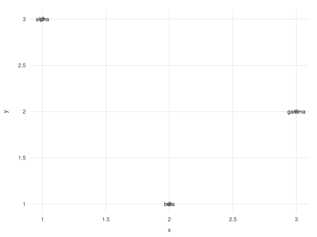
ggplot3(data.frame(x = c(1, 2, 3), y = c(3, 1, 2), l = c("alpha",
"beta", "gamma")), aes(x, y, label = l)) + geom_point(size = 5,
alpha = 0.3) + geom_text() + theme_minimal()Tile heatmap
A grid of cells shaded by a continuous value - correlation matrices, calendars, any two-way table.
Aesthetics: x, y, color
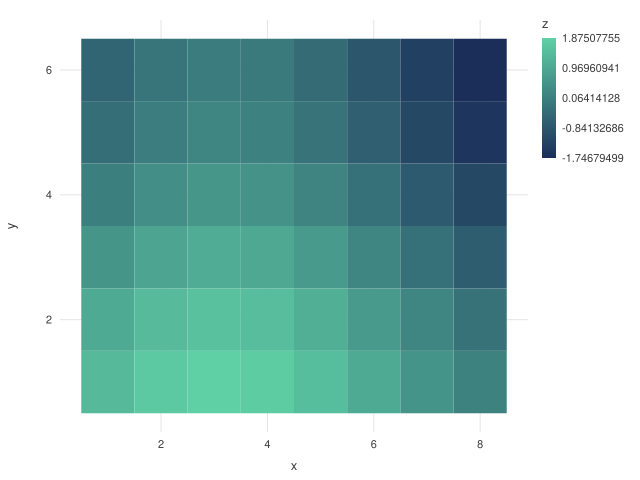
ggplot3(local({
g <- expand.grid(x = 1:8, y = 1:6)
g$z <- as.vector(outer(1:8, 1:6, function(a, b) sin(a/2) +
cos(b/2)))
g
}), aes(x, y, color = z)) + geom_tile() + theme_minimal()Distributions
Summaries of one variable, or of one variable split by a category. Where a stat is involved, plot_data() will show you exactly what was computed.
Bar chart
geom_bar() counts rows per category; geom_col() takes the height from y directly.
Aesthetics: x, color, position
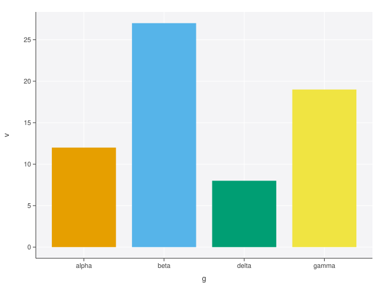
ggplot3(data.frame(g = c("alpha", "beta", "gamma", "delta"), v = c(12,
27, 19, 8)), aes(g, v, color = g)) + geom_col() + theme(legend_position = "none")Stacked and dodged bars
position = "stack" (default) shows totals, "dodge" compares groups side by side, "fill" shows proportions.
Aesthetics: x, color, position
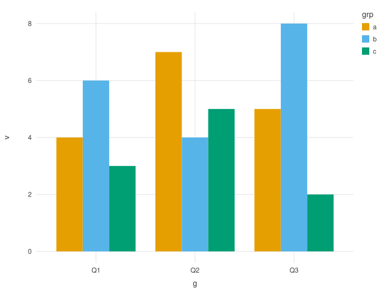
ggplot3(data.frame(g = rep(c("Q1", "Q2", "Q3"), each = 3), grp = rep(c("a",
"b", "c"), 3), v = c(4, 6, 3, 7, 4, 5, 5, 8, 2)), aes(g, v,
color = grp)) + geom_col(position = "dodge") + theme_minimal()Histogram
Bins a continuous variable and counts each bin; bins = n gives exactly n bins.
Aesthetics: x, bins or binwidth
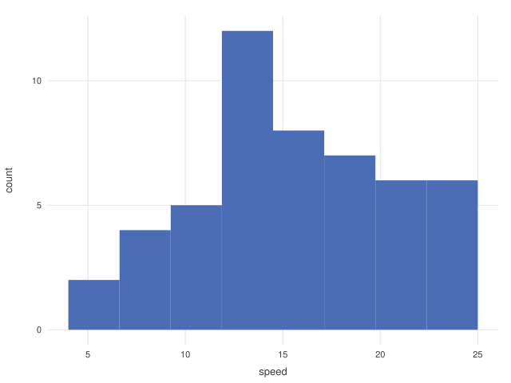
ggplot3(cars, aes(speed)) + geom_histogram(bins = 8) + theme_minimal()Density
A smoothed distribution estimate - easier to overlay across groups than histograms.
Aesthetics: x, color, adjust
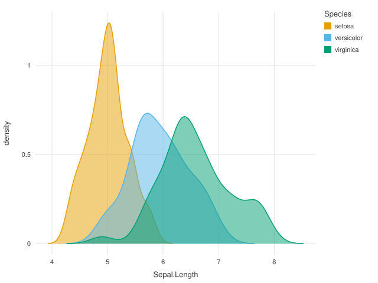
ggplot3(iris, aes(Sepal.Length, color = Species)) + geom_density(alpha = 0.5) +
theme_minimal()Box plot
Tukey's five-number summary with outliers beyond 1.5 IQR drawn individually.
Aesthetics: x, y, color
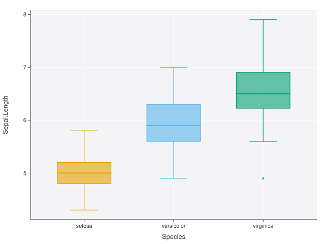
ggplot3(iris, aes(Species, Sepal.Length, color = Species)) + geom_boxplot() +
theme(legend_position = "none")Violin
A mirrored density per category - shows bimodality that a box plot hides.
Aesthetics: x, y, color
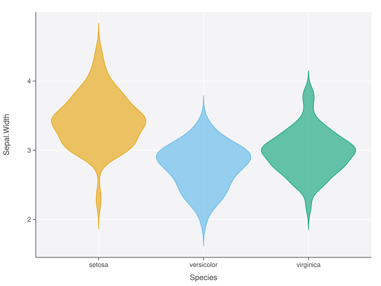
ggplot3(iris, aes(Species, Sepal.Width, color = Species)) + geom_violin() +
theme(legend_position = "none")Layered distribution view
Violin for shape, box for summary, jitter for the raw data - layers draw in the order added.
Aesthetics: x, y, color

ggplot3(iris, aes(Species, Sepal.Length, color = Species)) + geom_violin(alpha = 0.25) +
geom_boxplot() + geom_jitter(alpha = 0.4) + theme(legend_position = "none")Ridgeline (joyplot)
One density per group, offset vertically; compares many distributions in little vertical space.
Aesthetics: x, y (the group)
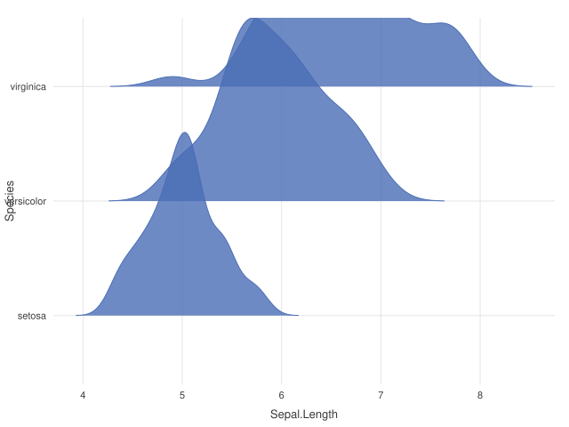
ggplot3(iris, aes(Sepal.Length, Species)) + geom_ridgeline() +
theme_minimal()Error bars and point ranges
An interval per observation; geom_pointrange() adds the estimate marker.
Aesthetics: x, y, ymin, ymax
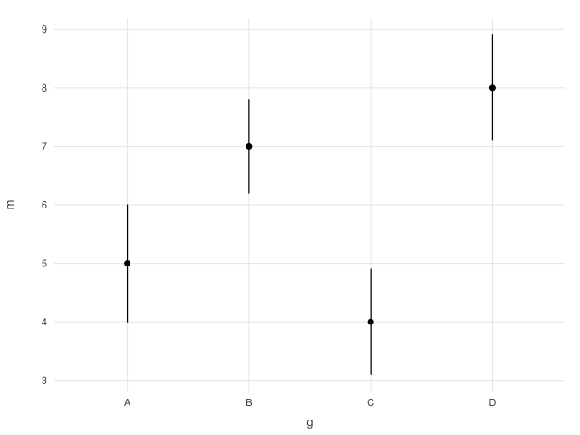
ggplot3(data.frame(g = c("A", "B", "C", "D"), m = c(5, 7, 4, 8),
lo = c(4, 6.2, 3.1, 7.1), hi = c(6, 7.8, 4.9, 8.9)), aes(g,
m, ymin = lo, ymax = hi)) + geom_pointrange() + theme_minimal()Dumbbell
Two endpoints joined by a connector - before/after comparison across categories.
Aesthetics: x, xend, y
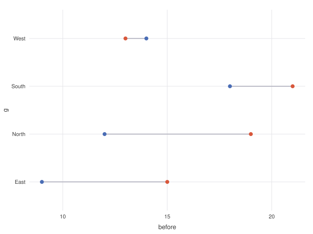
ggplot3(data.frame(g = c("North", "South", "East", "West"), before = c(12,
18, 9, 14), after = c(19, 21, 15, 13)), aes(before, xend = after,
y = g)) + geom_dumbbell() + theme_minimal()Waterfall
Running-total bars showing how each contribution moves a starting value to an ending one.
Aesthetics: x, y
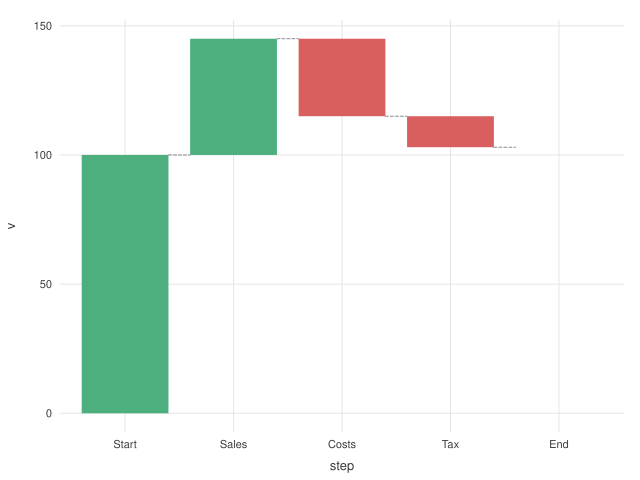
ggplot3(data.frame(step = factor(c("Start", "Sales", "Costs", "Tax",
"End"), levels = c("Start", "Sales", "Costs", "Tax", "End")),
v = c(100, 45, -30, -12, 0)), aes(step, v)) + geom_waterfall() +
theme_minimal()Layout
Geoms whose positions come from a layout algorithm rather than straight from the data. Each algorithm is implemented directly - squarified treemaps, force-directed graphs, Sankey node stacking.
Facets
One panel per subset. Axes are shared by default, which is what makes panels comparable.
Aesthetics: facet_wrap(var), facet_grid(rows, cols)
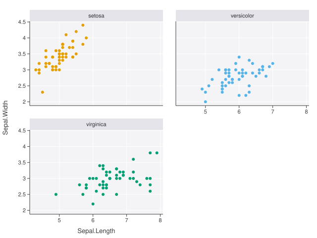
ggplot3(iris, aes(Sepal.Length, Sepal.Width, color = Species)) +
geom_point() + facet_wrap(Species) + theme(legend_position = "none")Facets with free scales
Each panel scales to its own data - right when panels differ in magnitude and shape matters more than comparison.
Aesthetics: scales = "free"
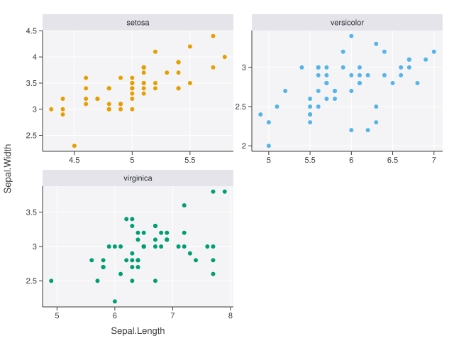
ggplot3(iris, aes(Sepal.Length, Sepal.Width, color = Species)) +
geom_point() + facet_wrap(Species, scales = "free") + theme(legend_position = "none")Radar / spider
A closed profile per series across categorical axes. The radial axis starts at zero so areas stay honest.
Aesthetics: x (axis), y (value), color (series)
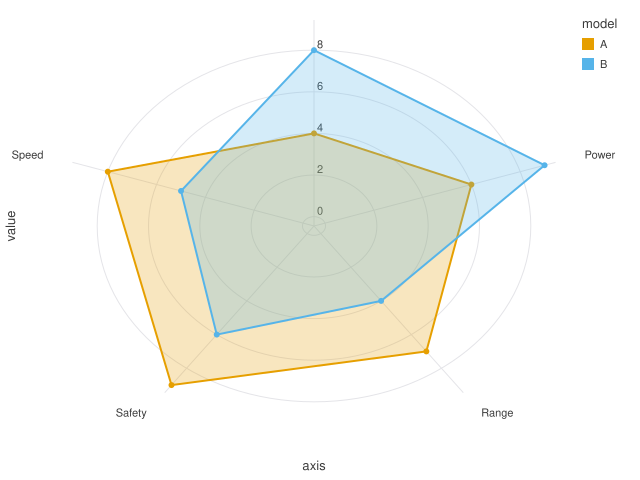
ggplot3(data.frame(axis = rep(c("Speed", "Power", "Range", "Cost",
"Safety"), 2), value = c(8, 6, 7, 4, 9, 5, 9, 4, 8, 6), model = rep(c("A",
"B"), each = 5)), aes(axis, value, color = model)) + geom_radar() +
coord_polar() + theme_minimal()Circular bar chart
Any cartesian geom bends into polar coordinates; bars become wedges.
Aesthetics: coord_polar()
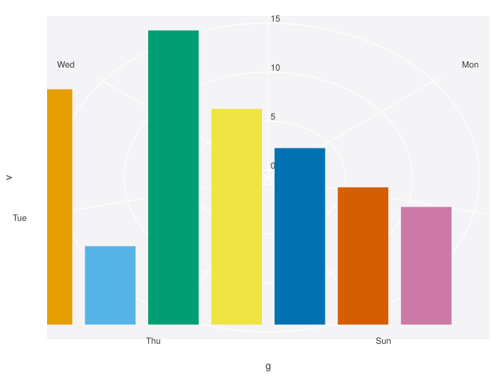
ggplot3(data.frame(g = c("Mon", "Tue", "Wed", "Thu", "Fri", "Sat",
"Sun"), v = c(4, 7, 6, 9, 12, 15, 11)), aes(g, v, color = g)) +
geom_col() + coord_polar() + theme(legend_position = "none")Treemap
Area-proportional tiles laid out with the squarified algorithm, so tiles stay near-square and comparable.
Aesthetics: size (area), label, color
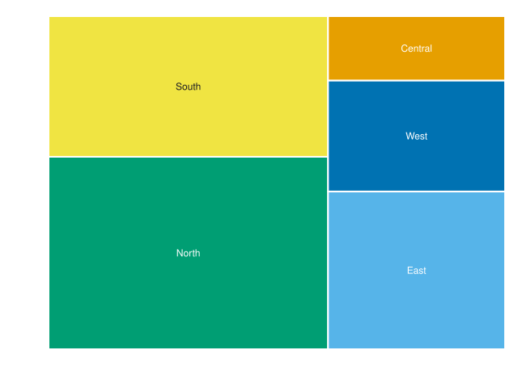
ggplot3(data.frame(region = c("North", "South", "East", "West",
"Central"), revenue = c(52, 38, 27, 19, 11)), aes(size = revenue,
label = region, color = region)) + geom_treemap() + theme(legend_position = "none")Sankey / alluvial
Flows between stages. One value-to-height scale is shared across stages, so a flow keeps its thickness end to end.
Aesthetics: x (source), xend (target), y (value)
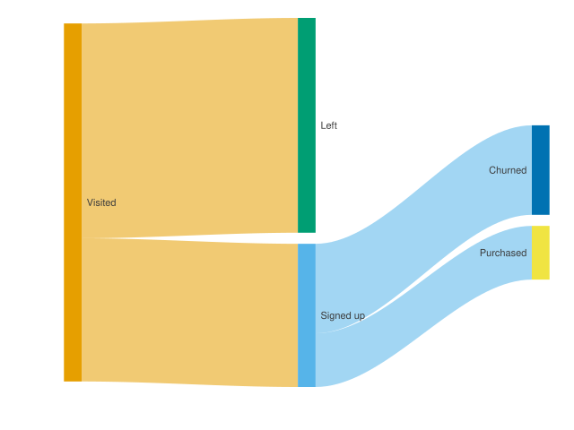
ggplot3(data.frame(from = c("Visited", "Visited", "Signed up",
"Signed up"), to = c("Signed up", "Left", "Purchased", "Churned"),
n = c(400, 600, 150, 250)), aes(x = from, xend = to, y = n)) +
geom_sankey()Network
A Fruchterman-Reingold force layout: repulsion between all nodes, attraction along edges, with a cooling schedule.
Aesthetics: x (source), xend (target)
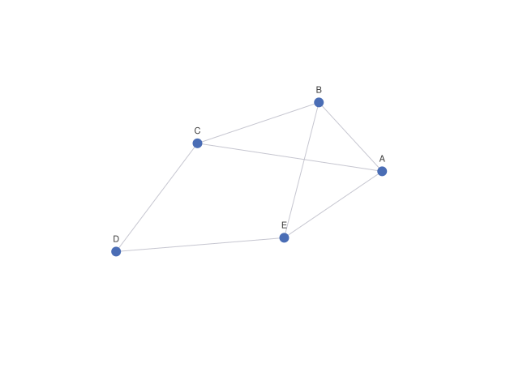
ggplot3(data.frame(from = c("A", "A", "B", "C", "D", "E", "B"),
to = c("B", "C", "C", "D", "E", "A", "E")), aes(x = from, xend = to)) +
geom_network()Chord
Entities on a circle joined by ribbons whose ends are arcs proportional to the flow.
Aesthetics: x (source), xend (target), y (value)
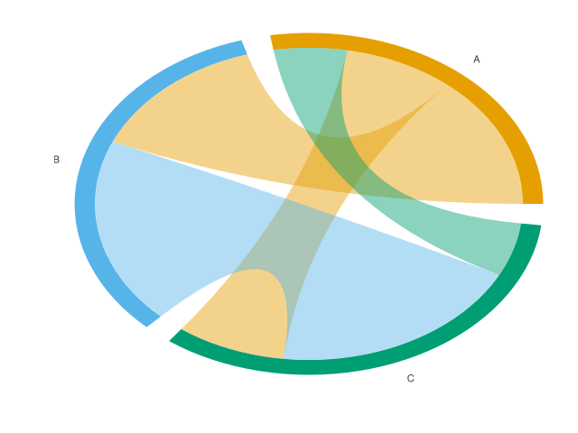
ggplot3(data.frame(from = c("A", "A", "B", "C"), to = c("B", "C",
"C", "A"), n = c(5, 3, 7, 2)), aes(x = from, xend = to, y = n)) +
geom_chord()Streamgraph
Stacked areas on a wiggle baseline rather than zero, so each band's thickness stays readable.
Aesthetics: x, y, color (series)
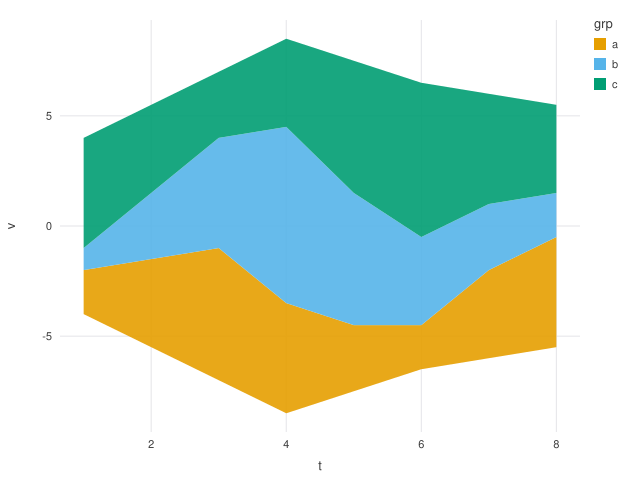
ggplot3(data.frame(t = rep(1:8, 3), v = c(2, 4, 6, 5, 3, 2, 4,
5, 1, 3, 5, 8, 6, 4, 3, 2, 5, 4, 3, 4, 6, 7, 5, 4), grp = rep(c("a",
"b", "c"), each = 8)), aes(t, v, color = grp)) + geom_stream() +
theme_minimal()Bump chart
Rank trajectories with sigmoid interpolation, so crossings read cleanly instead of as zigzags.
Aesthetics: x (time), y (rank), color (series)
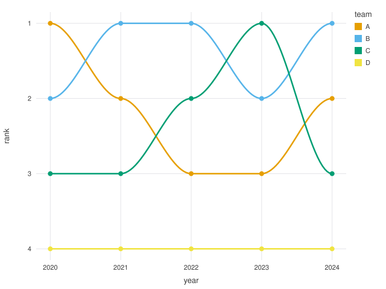
ggplot3(data.frame(year = rep(2020:2024, 4), rank = c(1, 2, 3,
3, 2, 2, 1, 1, 2, 1, 3, 3, 2, 1, 3, 4, 4, 4, 4, 4), team = rep(c("A",
"B", "C", "D"), each = 5)), aes(year, rank, color = team)) +
geom_bump() + scale_y_reverse() + theme_minimal()Funnel
Centred bars tapering through the stages of a conversion or triage process.
Aesthetics: x (stage), y (count)
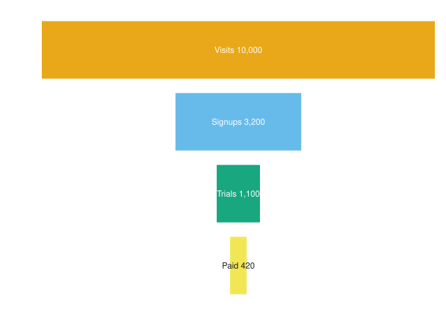
ggplot3(data.frame(stage = factor(c("Visits", "Signups", "Trials",
"Paid"), levels = c("Visits", "Signups", "Trials", "Paid")),
n = c(10000, 3200, 1100, 420)), aes(stage, n, color = stage)) +
geom_funnel() + theme(legend_position = "none")Parallel coordinates
One line per observation across independently rescaled axes - eyeball structure in high-dimensional data.
Aesthetics: x (variable), y (value), group
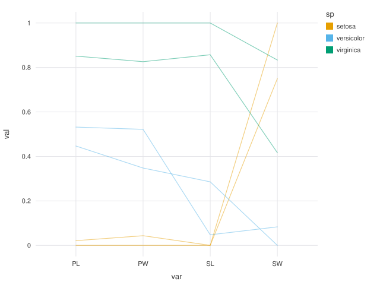
ggplot3(local({
d <- iris[c(1, 20, 60, 80, 110, 140), ]
data.frame(id = rep(rownames(d), 4), var = rep(c("SL", "SW",
"PL", "PW"), each = nrow(d)), val = c(d$Sepal.Length, d$Sepal.Width,
d$Petal.Length, d$Petal.Width), sp = rep(as.character(d$Species),
4))
}), aes(var, val, group = id, color = sp)) + geom_parallel() +
theme_minimal()UpSet (set intersections)
Intersection sizes with a membership matrix - readable where a 4-way Venn diagram is not.
Aesthetics: label (membership, e.g. "A&B")
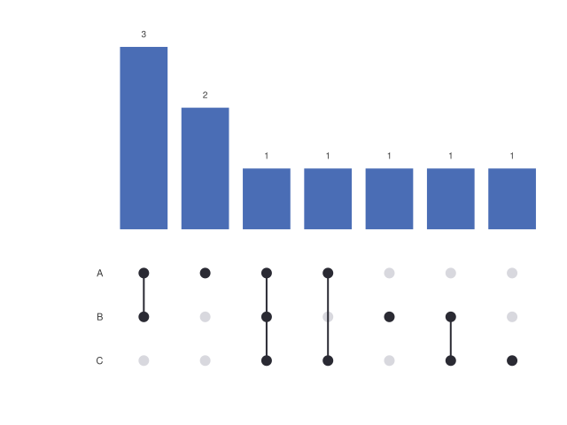
ggplot3(data.frame(sets = c("A", "A&B", "B", "A&B&C", "C", "A&B",
"A", "B&C", "A&C", "A&B")), aes(label = sets)) + geom_upset()Machine learning
Model diagnostics as first-class layers. Each takes a tidy data frame rather than a fitted model object, so any framework that can produce the columns will work.
SHAP beeswarm
Every observation's contribution per feature, nudged vertically where values collide; colour shows the direction of effect.
Aesthetics: x (SHAP value), y (feature), color (feature value)
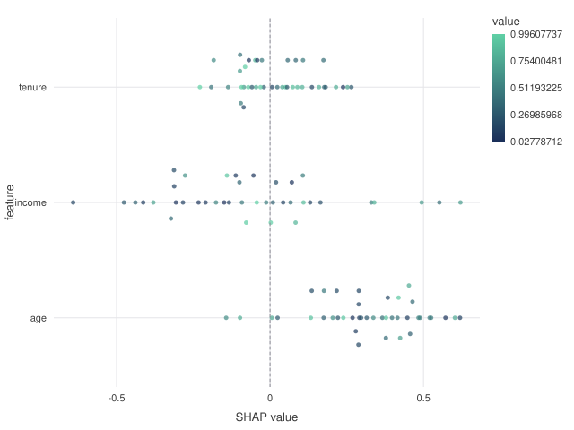
ggplot3(local({
set.seed(1)
data.frame(feature = rep(c("age", "income", "tenure"), each = 40),
shap = c(rnorm(40, 0.3, 0.2), rnorm(40, -0.1, 0.3), rnorm(40,
0, 0.15)), value = runif(120))
}), aes(shap, feature, color = value)) + geom_shap() + geom_vline(0,
dash = "3,3") + labs(x = "SHAP value", y = NULL) + theme_minimal()Partial dependence + ICE
Thin per-observation ICE curves under a bold average, so heterogeneous effects are visible.
Aesthetics: x (feature), y (prediction), group
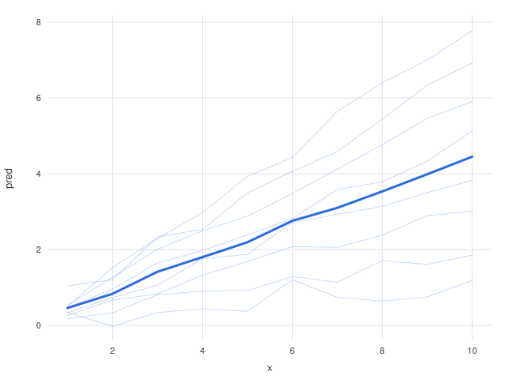
ggplot3(local({
set.seed(9)
data.frame(x = rep(1:10, 8), id = rep(1:8, each = 10), pred = as.vector(sapply(1:8,
function(i) {
(1:10) * 0.1 * i + rnorm(10, 0, 0.15)
})))
}), aes(x, pred, group = id)) + geom_partial_dependence() + theme_minimal()ROC curve
The true-positive against false-positive staircase over every score threshold.
Aesthetics: score, truth
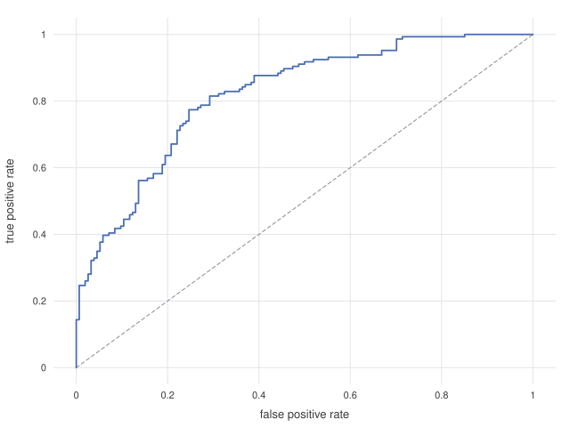
ggplot3(local({
set.seed(2)
s <- runif(300)
data.frame(score = s, truth = rbinom(300, 1, s))
}), aes(score = score, truth = truth)) + geom_roc() + theme_minimal()Calibration curve
Binned predictions against observed rates; distance from the diagonal is over- or under-confidence.
Aesthetics: x (predicted prob), y (outcome)
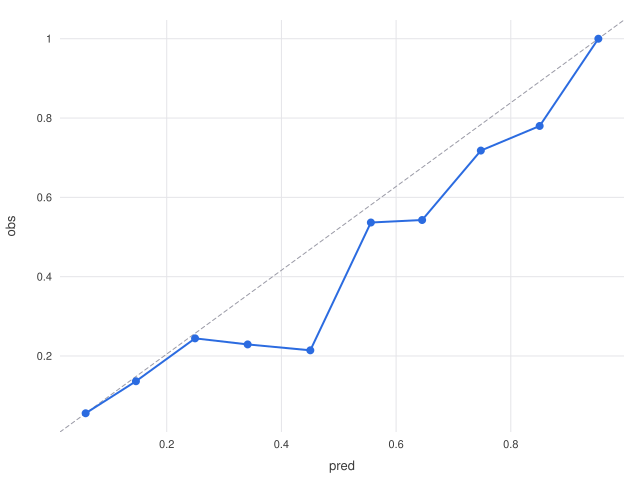
ggplot3(local({
set.seed(3)
p <- runif(400)
data.frame(pred = p, obs = rbinom(400, 1, p^1.3))
}), aes(pred, obs)) + geom_calibration() + theme_minimal()Cumulative gain
Share of positives captured against share of population targeted - how to size a cutoff.
Aesthetics: score, truth
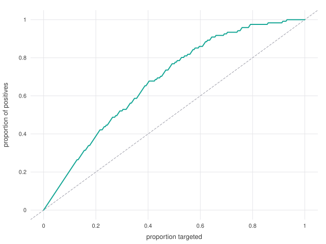
ggplot3(local({
set.seed(11)
s <- runif(250)
data.frame(score = s, y = rbinom(250, 1, s))
}), aes(score = score, truth = y)) + geom_lift_gain() + theme_minimal()Confusion matrix
Row-normalised shading with raw counts annotated, so class imbalance cannot hide errors.
Aesthetics: x (predicted), y (actual), size (count)
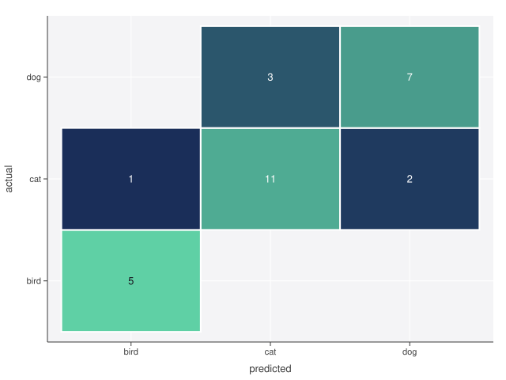
ggplot3(data.frame(predicted = c(rep("cat", 14), rep("dog", 9),
rep("bird", 6)), actual = c(rep("cat", 11), rep("dog", 3),
rep("dog", 7), rep("cat", 2), rep("bird", 5), "cat")), aes(predicted,
actual)) + geom_confusion_matrix() + theme(legend_position = "none")Residual diagnostics
Residuals against fitted values with a zero line and a loess trend - the first check on a linear model.
Aesthetics: x (fitted), y (residual)
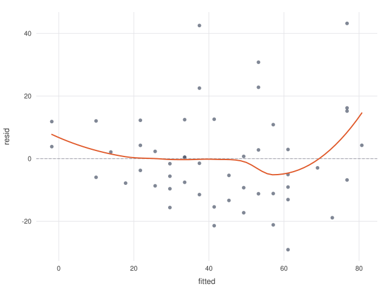
ggplot3(local({
m <- lm(dist ~ speed, cars)
data.frame(fitted = fitted(m), resid = resid(m))
}), aes(fitted, resid)) + geom_residual() + theme_minimal()Learning curve
Train and validation score against training-set size - shows whether a model is data-limited or over-fitting.
Aesthetics: x (size/epoch), y (score), color (split)
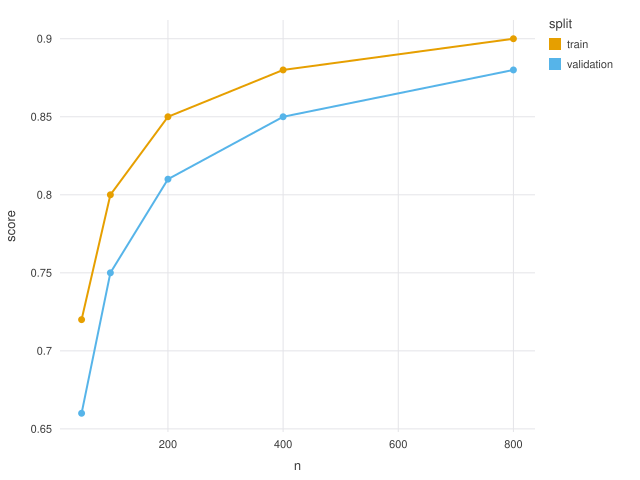
ggplot3(data.frame(n = rep(c(50, 100, 200, 400, 800), 2), score = c(0.72,
0.8, 0.85, 0.88, 0.9, 0.66, 0.75, 0.81, 0.85, 0.88), split = rep(c("train",
"validation"), each = 5)), aes(n, score, color = split)) +
geom_learning_curve() + theme_minimal()Embedding with hulls
A t-SNE/UMAP/PCA scatter with convex hulls, so cluster shape is visible rather than inferred from colour.
Aesthetics: x, y, color (cluster)
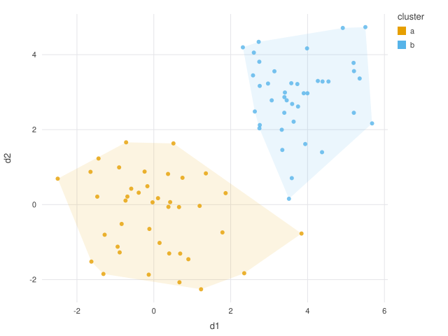
ggplot3(local({
set.seed(4)
data.frame(d1 = c(rnorm(40), rnorm(40, 4)), d2 = c(rnorm(40),
rnorm(40, 3)), cluster = rep(c("a", "b"), each = 40))
}), aes(d1, d2, color = cluster)) + geom_embedding() + theme_minimal()Silhouette
Sorted silhouette widths per cluster - the standard visual check on cluster separation.
Aesthetics: x (width), y (cluster)
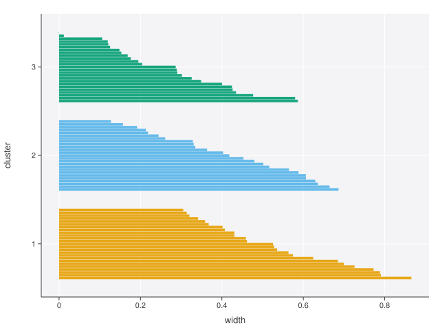
ggplot3(local({
set.seed(12)
data.frame(cluster = rep(c("1", "2", "3"), each = 25), width = c(runif(25,
0.3, 0.9), runif(25, 0.1, 0.7), runif(25, -0.1, 0.6)))
}), aes(width, cluster, color = cluster)) + geom_silhouette() +
theme(legend_position = "none")Decision boundary
A shaded prediction grid; overlay geom_point() for the training data.
Aesthetics: x, y, color (predicted class)
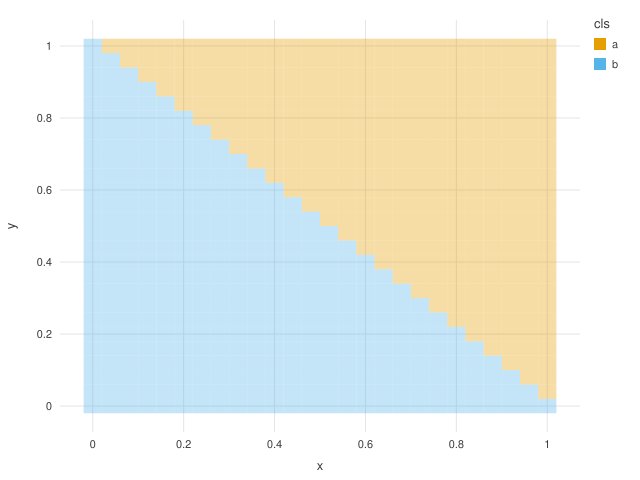
ggplot3(local({
g <- expand.grid(x = seq(0, 1, 0.04), y = seq(0, 1, 0.04))
g$cls <- ifelse(g$x + g$y > 1, "a", "b")
g
}), aes(x, y, color = cls)) + geom_decision_boundary() + theme_minimal()Forecast with interval
History solid, forecast dashed, interval as a ribbon on the forecast rows only.
Aesthetics: x, y, ymin, ymax, group
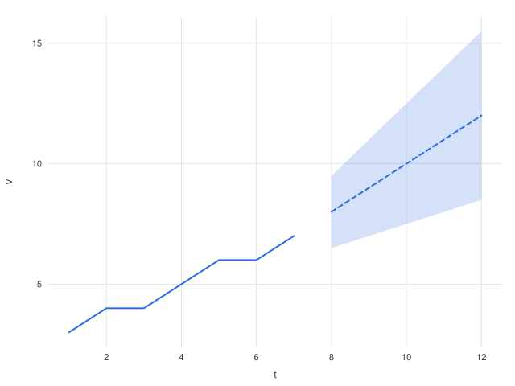
ggplot3(data.frame(t = 1:12, v = c(3, 4, 4, 5, 6, 6, 7, 8, 9, 10,
11, 12), lo = c(rep(NA, 7), 6.5, 7, 7.5, 8, 8.5), hi = c(rep(NA,
7), 9.5, 11, 12.5, 14, 15.5), part = rep(c("actual", "forecast"),
c(7, 5))), aes(t, v, ymin = lo, ymax = hi, group = part)) +
geom_forecast_band() + theme_minimal()Clinical
Figures that clinical reporting needs constantly and that otherwise take dozens of lines of manual layering. Estimators such as Kaplan-Meier and Aalen-Johansen are computed in-package.
Kaplan-Meier
Product-limit survival curves with censoring ticks, per treatment arm.
Aesthetics: time, status, color (arm)
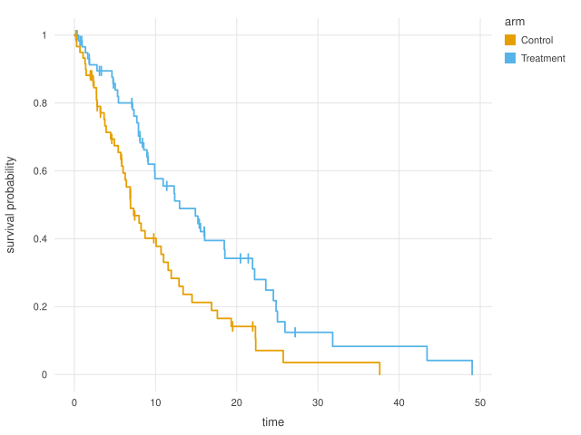
ggplot3(local({
set.seed(5)
data.frame(t = c(rexp(60, 0.08), rexp(60, 0.14)), ev = rbinom(120,
1, 0.75), arm = rep(c("Treatment", "Control"), each = 60))
}), aes(time = t, status = ev, color = arm)) + geom_km() + theme_minimal()Cumulative incidence
Aalen-Johansen curves per event type - the correct estimator when competing risks make 1 - KM biased upward.
Aesthetics: time, status (0 = censored, 1..k = event types)
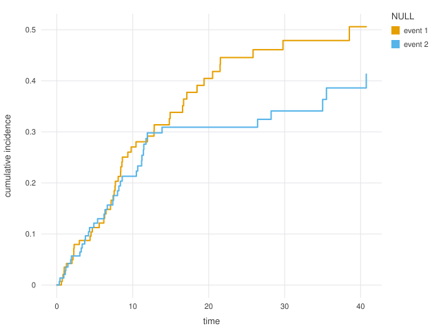
ggplot3(local({
set.seed(8)
data.frame(t = rexp(150, 0.1), ev = sample(0:2, 150, replace = TRUE,
prob = c(0.4, 0.35, 0.25)))
}), aes(time = t, status = ev)) + geom_cuminc() + theme_minimal()Forest plot
Estimates with confidence intervals and a no-effect reference; marker area encodes study weight.
Aesthetics: x (estimate), y (study), ymin, ymax, size (weight)
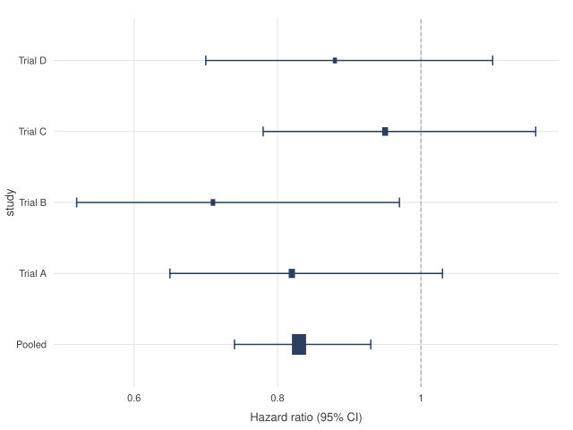
ggplot3(data.frame(study = c("Trial A", "Trial B", "Trial C", "Trial D",
"Pooled"), hr = c(0.82, 0.71, 0.95, 0.88, 0.83), lo = c(0.65,
0.52, 0.78, 0.7, 0.74), hi = c(1.03, 0.97, 1.16, 1.1, 0.93),
weight = c(30, 22, 28, 20, 100)), aes(hr, study, ymin = lo,
ymax = hi, size = weight)) + geom_forest() + labs(x = "Hazard ratio (95% CI)",
y = NULL) + theme_minimal()Swimmer plot
Per-subject time on treatment, with arrowheads for subjects still ongoing at data cutoff.
Aesthetics: x (duration), y (subject), color, label (ongoing)
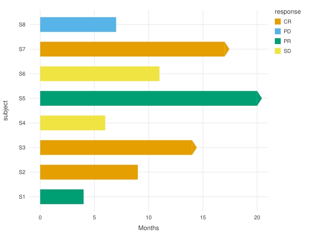
ggplot3(data.frame(subject = paste0("S", 1:8), months = c(4, 9,
14, 6, 20, 11, 17, 7), response = c("PR", "CR", "CR", "SD",
"PR", "SD", "CR", "PD"), ongoing = c(FALSE, FALSE, TRUE, FALSE,
TRUE, FALSE, TRUE, FALSE)), aes(months, subject, color = response,
label = ongoing)) + geom_swimmer() + labs(x = "Months", y = NULL) +
theme_minimal()Oncology spider plot
Per-subject change from baseline over time, with the RECIST +20% / -30% thresholds marked.
Aesthetics: x (time), y (% change), color (subject)
ggplot3(data.frame(month = rep(c(0, 2, 4, 6, 8), 4), pct = c(0,
-20, -35, -40, -42, 0, 10, 25, 40, 55, 0, -5, -10, -8, -12,
0, -30, -45, -50, -48), subject = rep(c("S1", "S2", "S3", "S4"),
each = 5)), aes(month, pct, color = subject)) + geom_spider_response() +
labs(x = "Month", y = "% change from baseline") + theme_minimal()RECIST waterfall
Best response per subject, ordered worst to best and shaded by RECIST category.
Aesthetics: x (subject), y (% change)
ggplot3(local({
set.seed(6)
data.frame(subject = paste0("S", 1:24), pct = sort(runif(24,
-78, 48), decreasing = TRUE))
}), aes(subject, pct)) + geom_waterfall_response() + labs(y = "% change from baseline",
x = NULL) + theme(axis_text_x = FALSE)Spaghetti trajectories
Individual longitudinal paths with a bold group mean - shows change without hiding spread.
Aesthetics: x (time), y (measure), group (subject)
ggplot3(local({
set.seed(7)
data.frame(week = rep(0:5, 10), id = rep(1:10, each = 6), score = as.vector(sapply(1:10,
function(i) {
50 + i + (0:5) * 2 + rnorm(6, 0, 3)
})))
}), aes(week, score, group = id)) + geom_spaghetti() + theme_minimal()Bland-Altman
Difference against mean with bias and 95% limits of agreement - the standard method-comparison plot.
Aesthetics: x, y (the two methods)
ggplot3(local({
set.seed(13)
a <- rnorm(80, 100, 12)
data.frame(method_a = a, method_b = a + rnorm(80, 2, 5))
}), aes(method_a, method_b)) + geom_bland_altman() + theme_minimal()Dose-response
A four-parameter log-logistic fit with the EC50 marked; pair with scale_x_log10().
Aesthetics: x (dose), y (response)
ggplot3(data.frame(dose = rep(c(0.1, 1, 10, 100, 1000), each = 3),
resp = c(5, 7, 6, 18, 22, 20, 52, 48, 55, 82, 79, 85, 95, 97,
93)), aes(dose, resp)) + geom_dose_response() + scale_x_log10() +
theme_minimal()Adverse-event heatmap
Incidence by preferred term and treatment arm, shaded by rate and annotated with values.
Aesthetics: x (arm), y (term), size (incidence)
ggplot3(local({
d <- expand.grid(arm = c("Placebo", "Low", "High"), ae = c("Nausea",
"Fatigue", "Headache", "Rash"))
d$pct <- c(5, 12, 22, 8, 15, 26, 3, 6, 11, 2, 9, 17)
d
}), aes(arm, ae, size = pct)) + geom_ae_heatmap() + theme(legend_position = "none")CONSORT flow
Participant flow from screening to analysis, laid out automatically from a stage/count table.
Aesthetics: label (stage), size (count)
ggplot3(data.frame(stage = c("Assessed for eligibility", "Randomised",
"Received allocation", "Completed follow-up", "Analysed"),
n = c(420, 300, 291, 276, 271)), aes(label = stage, size = n)) +
geom_consort()